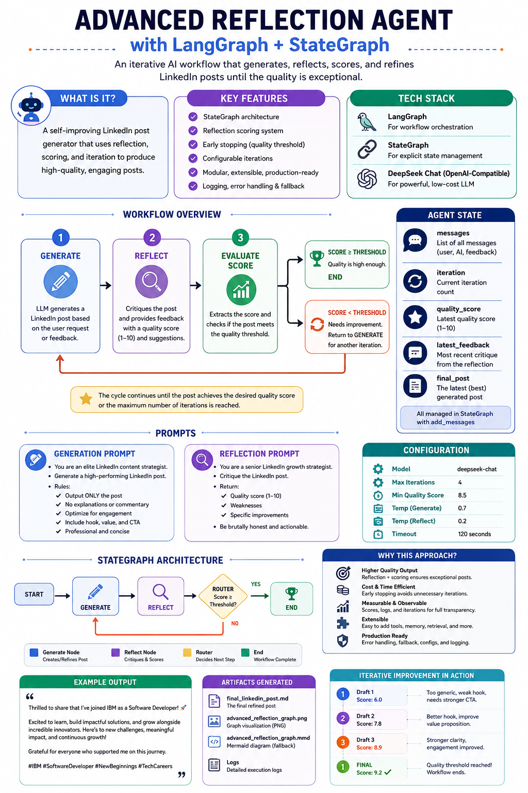

An AI system that drafts, critiques, and iteratively refines LinkedIn posts using LangGraph's StateGraph and DeepSeek.
LangGraph · StateGraph · DeepSeek · Python
A Reflection Agent is an AI system that can evaluate its own outputs, identify weaknesses, and iteratively improve through feedback loops. It mirrors how humans refine their work: draft → review → revise.
Borrowing from Daniel Kahneman's framework:
The agent cycles between these two modes until quality standards are met or a maximum iteration limit is reached.
final_linkedin_post.md.The workflow uses LangGraph's StateGraph with an explicit typed state defined via TypedDict.
| Field | Type | Description |
|---|---|---|
| messages | Annotated[List[BaseMessage], add_messages] | Conversation history. Each node appends rather than overwrites, preserving full context across cycles. |
| iteration | int | Zero-based count of completed generate–reflect cycles. Incremented by the reflection node. |
| quality_score | float | Numeric score (0.0–10.0) extracted from the latest reflection critique. |
| latest_feedback | str | Raw text of the most recent critique. Useful for external logging or inspection. |
| final_post | str | The latest generated post. At workflow end this holds the best (or last) version. |
The add_messages reducer ensures that state updates from each node are appended rather than overwritten, so the message list grows naturally throughout the workflow.
Two separate prompts drive the two nodes. Both use ChatPromptTemplate from LangChain with a MessagesPlaceholder for the conversation history.
You are an elite LinkedIn content strategist. Your ONLY task is to generate a high-performing LinkedIn post. Rules: - Output ONLY the post - No explanations - No markdown fences - No commentary - Optimize for engagement - Maintain professional tone - Include a strong hook - Include emotional resonance - Add CTA if appropriate
You are a senior LinkedIn growth strategist. Critique the LinkedIn post. Return: 1. Quality score from 1-10 2. Weaknesses 3. Specific improvements Be brutally honest.
Key design choices:
N/10 score, which is extracted by a regex helper function.The extract_score() helper uses a regex to find patterns like 7/10 or 8.5/10 in the reflection output:
import re match = re.search(r'(\d+(\.\d+)?)\s*/?\s*10', text) if match: return float(match.group(1)) return 5.0 # neutral default
If no score pattern is found, a default of 5.0 is returned so the workflow continues rather than prematurely stopping.
The router() function is the conditional edge attached to the "reflect" node. It checks two stopping criteria:
score ≥ MIN_QUALITY_SCORE (8.5) → route to END.iteration ≥ MAX_ITERATIONS (4) → route to END (safety limit)."generate" for another refinement cycle.All tunable parameters live in the Config class for easy experimentation:
| Parameter | Value | Purpose |
|---|---|---|
| MODEL_NAME | deepseek-chat |
DeepSeek model identifier used for all LLM calls. |
| BASE_URL | https://api.deepseek.com/v1 |
DeepSeek's OpenAI-compatible API endpoint. |
| MAX_ITERATIONS | 4 |
Maximum generate–reflect cycles before forced exit. Prevents infinite loops. |
| MIN_QUALITY_SCORE | 8.5 |
Score threshold for early stopping. When score ≥ this → END. |
| TEMPERATURE_GENERATE | 0.7 |
Higher = more creative, varied drafts (System 1). |
| TEMPERATURE_REFLECT | 0.2 |
Lower = more focused, consistent critiques (System 2). |
| TIMEOUT_SECONDS | 120 |
Max wall-clock time for the full workflow. Prevents indefinite hangs. |
Explains the Reflection Agent concept, System 1 vs System 2, the ASCII workflow diagram, and all key features.
os, logging, typing (Annotated, TypedDict, List, Literal), dotenv, langchain_openai, langchain_core.messages, langchain_core.prompts, and langgraph.graph.
Centralises model name, API URL, iteration limits, quality thresholds, temperatures, and timeout.
Python logging with INFO level and timestamped format for observability.
Loads .env via python-dotenv, reads DEEPSEEK_API_KEY (or OPENAI_API_KEY as fallback), and initialises two separate ChatOpenAI instances: one for generation (high temp) and one for reflection (low temp).
Defines the five fields: messages (with add_messages reducer), iteration, quality_score, latest_feedback, final_post.
Two ChatPromptTemplate definitions (generation + reflection) linked to their respective LLMs via the pipe operator (|).
Regex-based score parser that extracts N/10 patterns from reflection output.
The two graph nodes. Generation logs length and updates final_post. Reflection invokes the reflect chain, parses the score, increments iteration, and wraps feedback as HumanMessage.
Conditional edge that checks score threshold and max iterations to decide: loop or END.
Builds the StateGraph(AgentState) with nodes, edges, entry point, and conditional routing, then compiles.
main() runs the workflow, prints results, and saves to markdown. export_graph() saves the diagram as PNG or Mermaid fallback.
The reflection node returns its critique as a HumanMessage rather than AIMessage. This is deliberate:
MessagesPlaceholder that expects user messages to trigger revision.HumanMessage, the generation node treats it as user feedback and revises the post accordingly.ValueError with clear instructions.try/except in main(). A hardcoded fallback post is printed instead.export_graph() catches the exception silently and falls back to Mermaid text format.When the workflow completes successfully, it produces:
final_linkedin_post.md: The post saved as a standalone markdown file.advanced_reflection_graph.png or .mmd: A visualisation of the workflow graph.